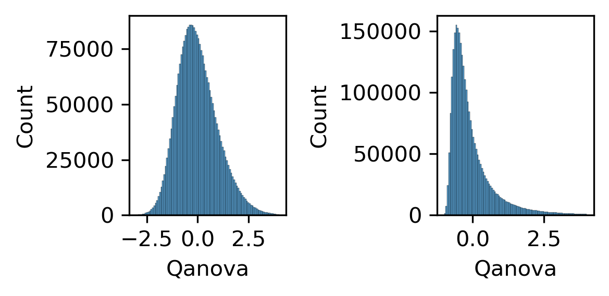
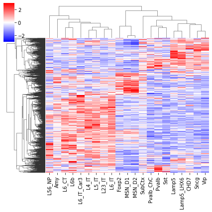
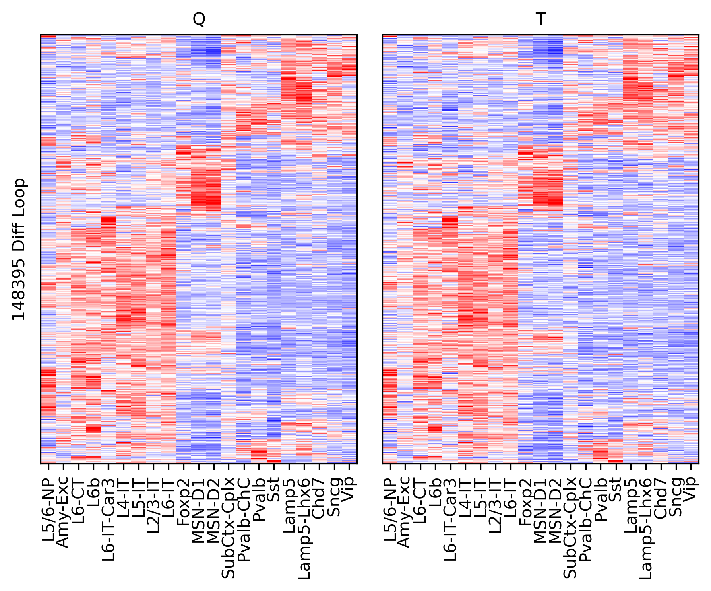

Load loop matrices and stats#
import cooler
import numpy as np
import pandas as pd
from scipy.sparse import triu
from scipy.stats import pearsonr, zscore, norm
from multiprocessing import Pool
from concurrent.futures import ProcessPoolExecutor, as_completed
import matplotlib as mpl
import matplotlib.pyplot as plt
from matplotlib.colors import LogNorm
from matplotlib import cm as cm
import seaborn as sns
mpl.style.use('default')
mpl.rcParams['pdf.fonttype'] = 42
mpl.rcParams['ps.fonttype'] = 42
mpl.rcParams['font.family'] = 'sans-serif'
mpl.rcParams['font.sans-serif'] = 'Helvetica'
leg = ['L23_IT', 'L4_IT', 'L5_IT', 'L6_IT', 'L6_IT_Car3', 'L56_NP', 'L6_CT', 'L6b', 'L5_ET', 'Amy',
'Lamp5', 'Lamp5_LHX6', 'Sncg', 'Vip', 'Pvalb', 'Pvalb_ChC', 'Sst', 'CHD7',
'MSN_D1', 'MSN_D2', 'Foxp2', 'SubCtx',
'ASC', 'ODC', 'OPC', 'MGC', 'PC', 'EC', 'VLMC'
]
legname = ['L2/3-IT', 'L4-IT', 'L5-IT', 'L6-IT', 'L6-IT-Car3', 'L5/6-NP', 'L6-CT', 'L6b', 'L5-ET', 'Amy-Exc',
'Lamp5', 'Lamp5-Lhx6', 'Sncg', 'Vip', 'Pvalb', 'Pvalb-ChC', 'Sst', 'Chd7',
'MSN-D1', 'MSN-D2', 'Foxp2', 'SubCtx-Cplx',
'ASC', 'ODC', 'OPC', 'MGC', 'PC', 'EC', 'VLMC'
]
leg2name = {xx:yy for xx,yy in zip(leg, legname)}
leg = {'exc': ['L23_IT', 'L4_IT', 'L5_IT', 'L6_IT', 'L6_IT_Car3', 'L56_NP', 'L6_CT', 'L6b', 'Amy'],
'inh': ['Lamp5', 'Lamp5_LHX6', 'Sncg', 'Vip', 'Pvalb', 'Pvalb_ChC', 'Sst', 'CHD7'],
'cnu': ['MSN_D1', 'MSN_D2', 'Foxp2'],
'sub': ['SubCtx'],
'glia': ['ASC', 'ODC', 'OPC'],
'mgc': ['MGC'],
'smc': ['PC'],
'endo': ['EC'],
'fibro': ['VLMC'],
}
leg['neu'] = leg['exc'] + leg['inh'] + leg['cnu'] + leg['sub']
leg['all'] = leg['neu'] + leg['glia'] + leg['mgc'] + leg['smc'] + leg['endo'] + leg['fibro']
group_name = 'neu'
ctgroup = []
if '_' in group_name:
for xx in group_name.split('_'):
ctgroup.append(leg[xx])
else:
for xx in leg[group_name]:
ctgroup.append([xx])
leg = pd.Index(np.concatenate(ctgroup))
legname = leg.map(leg2name)
res = 10000
indir = '/home/jzhou_salk_edu/sky_workdir/hba/loop_majortype/'
outdir = f'/home/jzhou_salk_edu/sky_workdir/hba/loop_majortype/diff/{group_name}/'
chrom_size_path = f'{indir}hg38_with_chrl.main.chrom.sizes'
chrom_sizes = cooler.read_chromsizes(chrom_size_path, all_names=True)
Load Loop Position and ANOVA#
loopall = [pd.read_csv(f'{indir}/{ct}/{ct}/{ct}.loop.bedpe', sep='\t', index_col=None, header=None) for ct in leg]
loopall = pd.concat(loopall, axis=0)
loopall = loopall.drop([6], axis=1).drop_duplicates(subset=[0,1,4]).sort_values([0,1,4])
loopall = pd.concat([loopall[(loopall[0]==c).values] for c in chrom_sizes.index[:-1]])
loopall.index = np.arange(loopall.shape[0])
loopall
| 0 | 1 | 2 | 3 | 4 | 5 | |
|---|---|---|---|---|---|---|
| 0 | chr1 | 900000 | 910000 | chr1 | 960000 | 970000 |
| 1 | chr1 | 900000 | 910000 | chr1 | 970000 | 980000 |
| 2 | chr1 | 910000 | 920000 | chr1 | 970000 | 980000 |
| 3 | chr1 | 910000 | 920000 | chr1 | 980000 | 990000 |
| 4 | chr1 | 910000 | 920000 | chr1 | 990000 | 1000000 |
| ... | ... | ... | ... | ... | ... | ... |
| 2873610 | chr22 | 50570000 | 50580000 | chr22 | 50670000 | 50680000 |
| 2873611 | chr22 | 50580000 | 50590000 | chr22 | 50670000 | 50680000 |
| 2873612 | chr22 | 50590000 | 50600000 | chr22 | 50670000 | 50680000 |
| 2873613 | chr22 | 50600000 | 50610000 | chr22 | 50670000 | 50680000 |
| 2873614 | chr22 | 50610000 | 50620000 | chr22 | 50670000 | 50680000 |
2873615 rows × 6 columns
loopall.to_csv(f'{outdir}merged_loop.bedpe', sep='\t', index=False, header=False)
loopall.to_hdf(f'{outdir}merged_loop.hdf', key='data')
for c in chrom_sizes.index[:-1]:
loopfilter = (loopall[0]==c)
looptmp = loopall.loc[loopfilter, [1,4]].values // res
for matrix in ['Q', 'E', 'T']:
cool = cooler.Cooler(f'{outdir}majortype_{matrix}pv.cool')
pv = triu(cool.matrix(balance=False, sparse=True).fetch(c)).tocsr()
loopall.loc[loopfilter, f'{matrix}anova'] = pv[(looptmp[:,0], looptmp[:,1])].A1
print(c)
chr1
chr2
chr3
chr4
chr5
chr6
chr7
chr8
chr9
chr10
chr11
chr12
chr13
chr14
chr15
chr16
chr17
chr18
chr19
chr20
chr21
chr22
loopall.to_hdf(f'{outdir}merged_loop.hdf', key='data')
Load Loop Q#
loopall = pd.read_hdf(f'{outdir}merged_loop.hdf', key='data')
loopall
| 0 | 1 | 2 | 3 | 4 | 5 | Qanova | Eanova | Tanova | |
|---|---|---|---|---|---|---|---|---|---|
| 0 | chr1 | 900000 | 910000 | chr1 | 960000 | 970000 | 3.750881 | 6.097476 | 2.068213 |
| 1 | chr1 | 900000 | 910000 | chr1 | 970000 | 980000 | 3.322128 | 6.001146 | 2.007495 |
| 2 | chr1 | 910000 | 920000 | chr1 | 970000 | 980000 | 3.293559 | 5.439024 | 2.229271 |
| 3 | chr1 | 910000 | 920000 | chr1 | 980000 | 990000 | 2.704021 | 5.648575 | 2.289167 |
| 4 | chr1 | 910000 | 920000 | chr1 | 990000 | 1000000 | 2.819877 | 5.675182 | 1.669268 |
| ... | ... | ... | ... | ... | ... | ... | ... | ... | ... |
| 2873610 | chr22 | 50570000 | 50580000 | chr22 | 50670000 | 50680000 | 1.646674 | 11.822375 | 1.625390 |
| 2873611 | chr22 | 50580000 | 50590000 | chr22 | 50670000 | 50680000 | 2.256175 | 11.555016 | 1.335000 |
| 2873612 | chr22 | 50590000 | 50600000 | chr22 | 50670000 | 50680000 | 3.531459 | 11.165133 | 1.195543 |
| 2873613 | chr22 | 50600000 | 50610000 | chr22 | 50670000 | 50680000 | 4.896728 | 11.926161 | 2.028210 |
| 2873614 | chr22 | 50610000 | 50620000 | chr22 | 50670000 | 50680000 | 5.475712 | 13.031472 | 3.153314 |
2873615 rows × 9 columns
def load_Q(ct, m):
tmp = []
cool_file = cooler.Cooler(f'{indir}{ct}/{ct}/{ct}.{m}.cool').matrix(balance=False, sparse=True)
for c in chrom_sizes.index[:-1]:
mat = cool_file.fetch(c).tocsr()
tmp.append(mat[(loopall.loc[loopall[0]==c, 1].values // res, loopall.loc[loopall[0]==c, 4].values // res)].A1)
# print(ct, c)
return [ct, np.concatenate(tmp)]
cpu = 5
with ProcessPoolExecutor(cpu) as executor:
futures = []
for xx in leg:
future = executor.submit(
load_Q,
ct=xx,
m='Q'
)
futures.append(future)
loopq = []
for future in as_completed(futures):
tmp = future.result()
loopq.append(pd.DataFrame(tmp[1], columns=[tmp[0]]))
print(f'{tmp[0]} finished')
L23_IT finished
L6_IT_Car3 finished
L5_IT finished
L6_IT finished
L4_IT finished
L56_NP finished
L6_CT finished
L6b finished
Amy finished
Lamp5 finished
Lamp5_LHX6 finished
Sncg finished
Vip finished
Pvalb finished
Pvalb_ChC finished
Sst finished
CHD7 finished
MSN_D1 finished
MSN_D2 finished
Foxp2 finished
SubCtx finished
loopq = pd.concat(loopq, axis=1)
loopq = loopq[leg]
loopq.to_hdf(f'{outdir}loop_Q.hdf', key='data')
cpu = 5
with ProcessPoolExecutor(cpu) as executor:
futures = []
for xx in leg:
future = executor.submit(
load_Q,
ct=xx,
m='T'
)
futures.append(future)
loopt = []
for future in as_completed(futures):
tmp = future.result()
loopt.append(pd.DataFrame(tmp[1], columns=[tmp[0]]))
print(f'{tmp[0]} finished')
L5_IT finished
L23_IT finished
L6_IT finished
L4_IT finished
L6_IT_Car3 finished
L56_NP finished
L6_CT finished
L6b finished
Amy finished
Lamp5 finished
Lamp5_LHX6 finished
Sncg finished
Vip finished
Pvalb finished
Pvalb_ChC finished
Sst finished
CHD7 finished
MSN_D1 finished
MSN_D2 finished
Foxp2 finished
SubCtx finished
loopt = pd.concat(loopt, axis=1)
loopt = loopt[leg]
loopt.to_hdf(f'{outdir}loop_T.hdf', key='data')
loopq = pd.read_hdf(f'{outdir}loop_Q.hdf', key='data')
loopt = pd.read_hdf(f'{outdir}loop_T.hdf', key='data')
fig, axes = plt.subplots(1, 2, figsize=(4, 2), dpi=300)
ax = axes[0]
sns.histplot(zscore(np.log10(loopall['Tanova'])), bins=100, binrange=(-3,4), ax=ax)
ax = axes[1]
sns.histplot(zscore(loopall['Tanova']), bins=100, binrange=(-1,4), ax=ax)
plt.tight_layout()
findfont: Font family ['sans-serif'] not found. Falling back to DejaVu Sans.
findfont: Generic family 'sans-serif' not found because none of the following families were found: Helvetica

fig, axes = plt.subplots(1, 2, figsize=(4, 2), dpi=300)
ax = axes[0]
sns.histplot(zscore(np.log10(loopall['Qanova'])), bins=100, binrange=(-3,4), ax=ax)
ax = axes[1]
sns.histplot(zscore(loopall['Qanova']), bins=100, binrange=(-1,4), ax=ax)
plt.tight_layout()

thres1 = norm.isf(0.025)
thres2 = norm.isf(0.15)
print(thres1, thres2)
1.9599639845400545 1.0364333894937898
selb = ((zscore(loopall['Qanova'])>thres2) & (zscore(loopall['Tanova'])>thres2))
tmpq = loopq.loc[selb].values
tmpq = zscore(tmpq, axis=1)
tmpt = loopt.loc[selb].values
tmpt = zscore(tmpt, axis=1)
np.random.seed(0)
sel = np.random.choice(np.arange(len(tmpq)), 2000, False)
cg = sns.clustermap(tmpq[sel], cmap='bwr', vmin=-3, vmax=3, metric='cosine', xticklabels=leg, yticklabels=[], figsize=(6,6))

rorder = cg.dendrogram_row.reordered_ind.copy()
corder = cg.dendrogram_col.reordered_ind.copy()
fig, axes = plt.subplots(1, 2, sharey='all', figsize=(6, 5), dpi=300)
ax = axes[0]
ax.imshow(tmpq[np.ix_(sel[rorder], corder)], cmap='bwr', aspect='auto', vmin=-3, vmax=3, interpolation='none')
ax.set_title('Q', fontsize=10)
# sns.despine(ax=ax, left=True, bottom=True)
ax.set_xticks(np.arange(len(leg)))
ax.set_xticklabels(legname[corder], rotation=90)
ax.set_yticks([])
ax.set_ylabel(f'{tmpq.shape[0]} Diff Loop')
ax = axes[1]
ax.imshow(tmpt[np.ix_(sel[rorder], corder)], cmap='bwr', aspect='auto', vmin=-3, vmax=3, interpolation='none')
ax.set_title('T', fontsize=10)
# sns.despine(ax=ax, left=True, bottom=True)
ax.set_xticks(np.arange(len(leg)))
ax.set_xticklabels(legname[corder], rotation=90)
plt.tight_layout()
